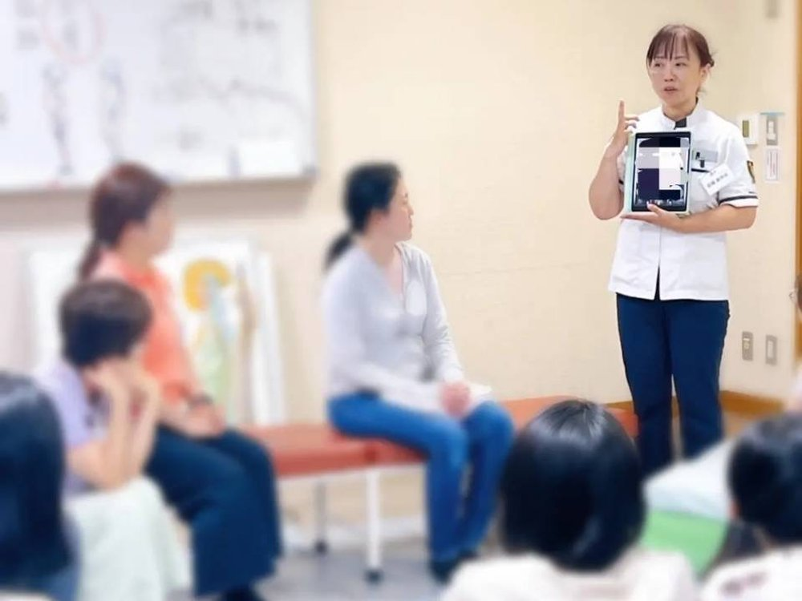
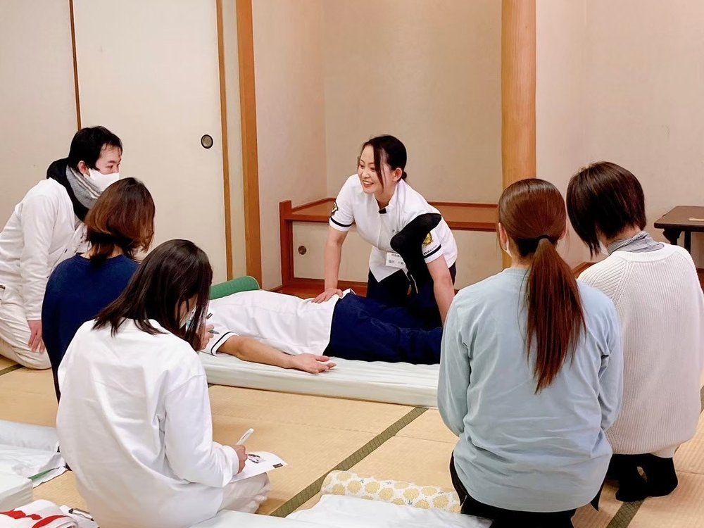
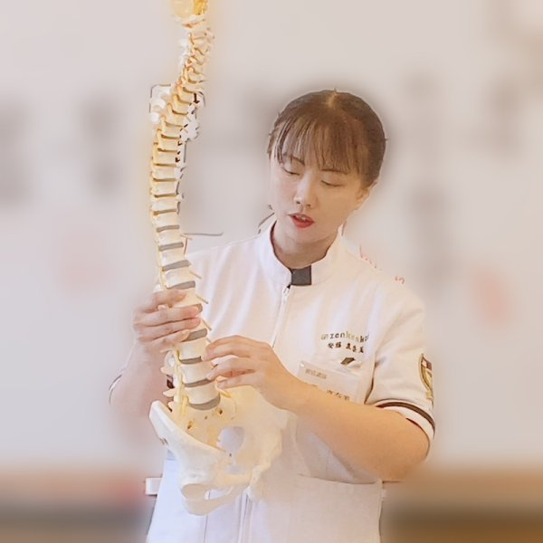

10/18（日）9:45〜16:00
- 会場：アクシオン福岡（博多区・駐車場あり）
- 参加費：10,000円（お弁当付き）
姿勢を見て、手で施術し、毎日の身体づくりを支える。
「カイロプラクティック」という仕事があります。
まずは1日、実際に体験してみませんか。
身体の見方と、手を使った施術の基本を、体験しながら学ぶ初心者向けの1日講座です。
10/18（日）9:45〜16:00

ひとつでも当てはまったら、まずは講座の内容を見てみてください。
※いつか自宅などで自分の施術院を持ちたい、という方にも向いています。
背骨や骨盤に着目して、手で身体を整えていく方法です。体操・食事・生活習慣など、身体全体から健康を考えます。
身体の悩みを聞き、姿勢を確認する。手を使って施術し、家での身体づくりも一緒に考える。技術を使う仕事であり、人と話し、生活にも向き合う仕事です。
施術だけでなく、毎日の身体づくりも支える仕事です。

「母のために」と学び始め、友人や知人の健康相談をするうちに仕事として始め、今はマンションの一室に施術院を構えている方がいます（奈良県）。
※全健会のセミナーで学んだ方の例です。1日講座だけで、この働き方になれるわけではありません。くわしくは下の「学んだ方の、今」をご覧ください。
実際に見て、触れて、体験しながら学びます。
以下は10/18・10/19の内容です
骨格模型を見ながら、骨盤や背骨がどこにあり、どうつながっているかを学びます。体の歪みの見方も知ります。
講師の説明を聞きながら、受講生どうしで基本の実技を体験します。
姿勢と骨盤の関係など、なぜその手技をするのかを、考え方から知ります。
栄養・運動・睡眠など、日々の身体づくりを学びます。
カイロプラクティックとは／美姿勢施術・エクササイズ／美肌体験。この日の実技は、美容的な内容です。
技術を完成させる講座ではありません。
※診断や治療を行う講座ではありません。
マッサージ、エステ、ヨガ、ピラティスなど、今の仕事の経験がある方も参加できます。骨格から体を見るカイロプラクティックの考え方を、1日で体験できます。次のステップとして学ぶかどうか、考える材料にしてください。
10/18（日） 10,000円
10/19（月） 10,000円
10/21（水） 10,000円
※各日程とも少人数制です。
※参加できるのは高校生以上の方です。
※実技は受講生どうしで行います。

レディースカイロうらら 院長
安藤 真奈美
もとは一級建築士。
最初は、自分と家族の身体のために学び始めたカイロプラクティック。いつのまにか仕事になり、福津市で開院して12年になります。
建物の土台を大切にするように、身体も土台となる骨盤から見ることを大切にしています。体を骨格から見る目と、それを言葉で伝える力。12年の現場で大切にしてきた、その基本をお伝えします。
1日で学ぶカラダ講座 受講者
「根本のゆがみを整えることが大事だと、すごくよくわかりました」
「色んな方とお話しすることができて、視野が広がりました」
「楽しかったです。自分の体をもっと知って、病気にならないようにします」
全健会（Zenkenkai）のセミナーで学び、
仕事につなげた方の声（全健会 受講案内資料より）
「母のために学び始めました」
病気がちな母に施術したいと思い受講。友人や知人の健康相談をするうちに仕事として始め、今はマンションの一室に施術院を構え、出張施術を中心にしています。
奈良県
「子どもとの時間も大切にできています」
手に職をつけ、子どもとの時間を増やしたいと思い受講。今は、共同施術院で仕事をしています。
徳島県
まずは家族や知人から始めました
家族や知人を看ることから始め、勉強面のサポート体制が充実していたこともあり、スムーズに事業を始められました。今は自宅以外に2店舗の施術院を開いています。
兵庫県
自宅で美容カイロのサロンを開いています
元々は患者として通い、人生を変えたいと思い受講。まず家族や知人に練習させてもらい、今は自宅で美容カイロサロンを開いています。
岐阜県
※全健会の受講案内資料の体験談をもとに、要約して掲載しています。
※個人の感想です。結果を保証するものではありません。
1日講座のその先へ。
1日講座は、基本を体験する入口です。「もっと深く学びたい」と感じた方には、全健会（Zenkenkai）のセミナーをご案内しています。
※全健会のセミナーは積み上げ方式です。すべてを受ける義務はありませんが、全健会の制度では、施術料をいただく活動に、上記の腰肩集中事業セミナーまでの受講が必要です。
全健会のセミナーを受けたあとも、先輩から学ぶインターン制度や地域の勉強会など、学び続けられる環境があります。
※全健会のセミナーを受講した方向けの案内です。利用条件や費用、地域での実施内容はお問い合わせください。
初級以降の費用・日程は、お申し込み前でもLINEでご質問いただけます。1日講座の中でも、詳しくご説明します。
主催：全健会（Zenkenkai）
1日目 基礎知識／検査法・問診票／実習（骨盤・腰椎・肩関節、胸椎・頸椎）
2日目 総合実習／総合指導法／事業としてのカイロ／美容カイロ
3日目 マスターテスト／カイロビジネス講義／中級・上級セミナーのデモ
4日目 患者様をみるまで／現場での患者様対応／閉講式
5,000円
10/17（土）10:00〜13:00／レディースカイロうらら（福津市）
ペア割：お2人で7,500円／特典：家族優待券 通常6,500円 → 3,000円
※10/17は小さなお子さんのお預かりはありません。
Q. カイロプラクティックの仕事をよく知らなくても大丈夫？
A. はい。どんな仕事なのかを知るところから、体験しながらお伝えします。
Q. 施術の経験がなくても大丈夫？
A. はい、初めての方向けの内容です。
Q. 仕事にするかどうか、まだ決めていなくても参加できますか？
A. はい。考えている段階の方こそ、体験してから決めていただけます。
Q. 1日でカイロプラクティックの仕事ができるようになりますか？
A. いいえ。この講座は基本を体験する入口です。その先は「本格的に学ぶ道筋」をご覧ください。
Q. 1人で参加しても大丈夫？
A. 少人数制なので、お1人でも安心です。
Q. 実技は誰とするのですか？
A. 受講生どうしで行います。
Q. 小さなお子さんがいても参加できますか？
A. 10/18（日）・10/19（月）は、別室で無料でお預かりします。10/17・10/21は、お預かりがありません。
Q. すでにセラピストですが、参加する意味はありますか？
A. 今の仕事とは別の、骨格から体を見るカイロプラクティックの考え方を体験できます。
Q. 開業の個別相談はできますか？
A. この講座では、個別の開業相談は行っていません。
Q. 10/21（久留米）は、ほかの日と内容が違いますか？
A. 美容（美姿勢・美肌）がテーマの内容です。カイロプラクティックの考え方に加えて、美姿勢施術・エクササイズ、美肌体験を行います。実技も、美容的な内容になります。参加費は同じ10,000円（昼食付き）です。
Q. 半日版と1日版、どちらがいい？
A. 手を使った体験まで進みたい方は1日版、まず身体の見方を知りたい方は半日版がおすすめです。
Q. 2人で参加すると割引はありますか？
A. 10/17（半日）は2人で7,500円、10/18・10/19（1日）は2人で15,000円のペア割があります。10/21は対象外です。
Q. 痛みが強いとき、この講座で治せますか？
A. この講座は診断や治療の場ではありません。強い痛みや長引く痛みは、医療機関にご相談ください。
ほかにご不明な点は、講座用LINEでお答えします。